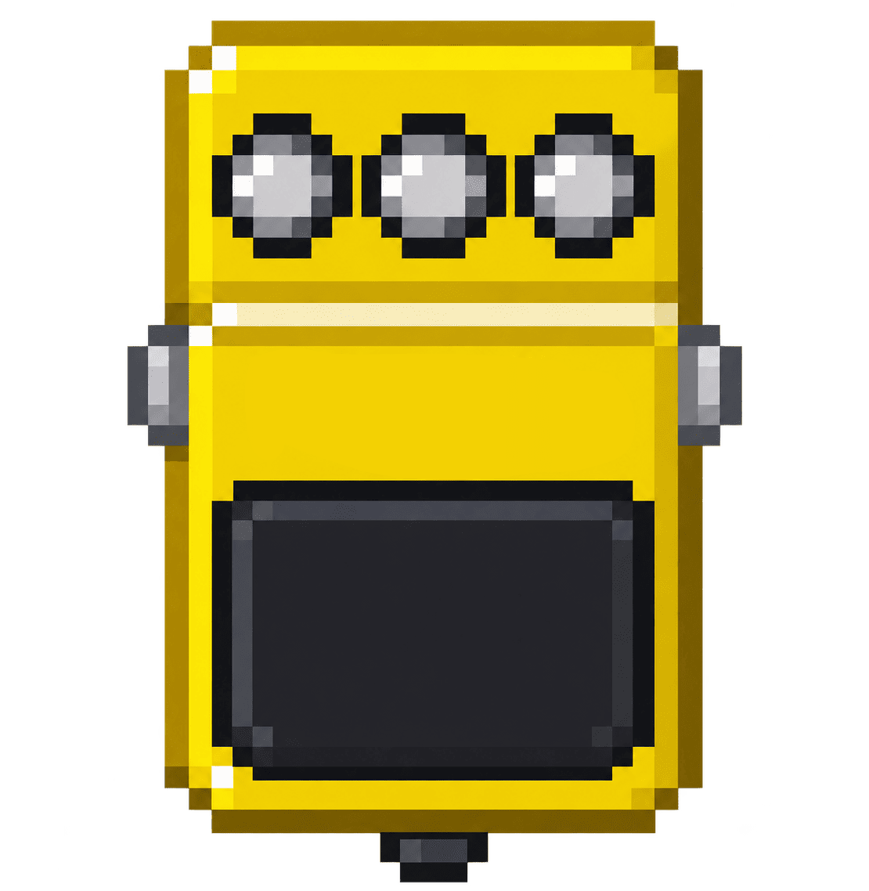
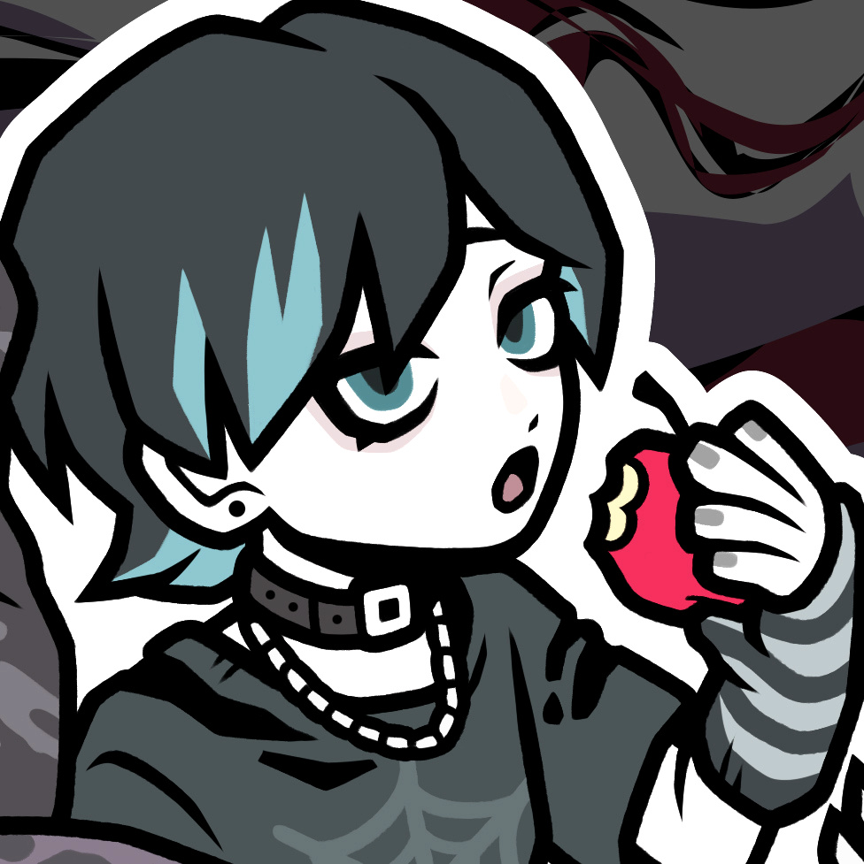

Home
Home
 Discography
Discography

Plugin Works
Works
 Contact
Contact
 FREEBGM
FREEBGM

SNAP は、タイトで輪郭のあるモダンクランチサウンドを作ることに特化して開発した、ギタリスト向けのエフェクタープラグインです。
コンプレッサーとオーバードライブをひとつにまとめ、音作りの中心となる独自の「SNAP」コントロールを搭載。
SNAPノブでは、ピッキングの立ち上がりやアタック感をコントロールできます。軽いタッチでもピッキングニュアンスや粒立ちを出しやすく、モダンなギターサウンドに必要な、タイトでレスポンスの良い弾き心地を作ることができます。
基本的には、アンプやアンプシミュレーターの前段に置くドライブ／ブースターとして使用可能。
一方で、ノイズゲート、10バンドEQ、CABセクションも内蔵しているため、CABをONにすればSNAP単体でギターサウンドを完結させることもできます。
クリーン寄りの軽いクランチから、BOOSTを使ったよりアグレッシブなサウンドまで対応。
モダンなクランチサウンドと、気持ちよく弾けるピッキングレスポンスをひとつのプラグインで。
それが SNAP です。

SNAP は、タイトで輪郭のあるモダンクランチサウンドを作ることに特化して開発した、ギタリスト向けのエフェクタープラグインです。
コンプレッサーとオーバードライブをひとつにまとめ、音作りの中心となる独自の 「SNAP」コントロールを搭載。
SNAPノブでは、ピッキングの立ち上がりやアタック感をコントロールできます。軽いタッチでもピッキングニュアンスや粒立ちを出しやすく、モダンなギターサウンドに必要な、タイトでレスポンスの良い弾き心地を作ることができます。
基本的には、アンプやアンプシミュレーターの前段に置くドライブ／ブースターとして使用可能。
一方で、ノイズゲート、10バンドEQ、CABセクションも内蔵しているため、CABをONにすればSNAP単体でギターサウンドを完結させることもできます。
クリーン寄りの軽いクランチから、BOOSTを使ったよりアグレッシブなサウンドまで対応。
モダンなクランチサウンドと、気持ちよく弾けるピッキングレスポンスをひとつのプラグインで。
それが SNAP です。